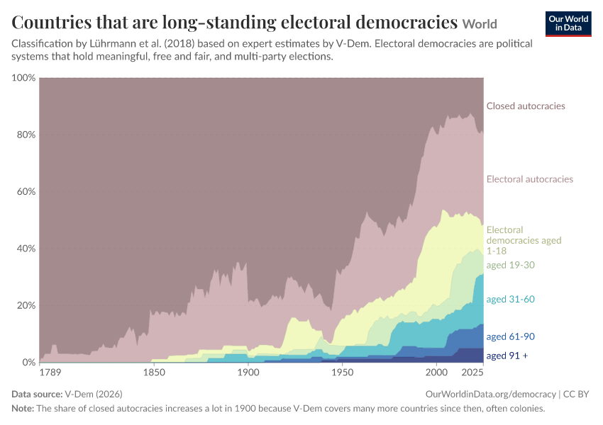

Interactive visualization requires JavaScript
Related research and data
Charts
- Academic Freedom Index
- Access to justice for menRegimes of the World
- Access to justice for womenRegimes of the World
- Age of democracyPolity
- Age of electoral democracyRegimes of the World
- Age of electoral democracyLexical Index
- Age of full democracyLexical Index
- Age of liberal democracyRegimes of the World
- Basic State Functions ScoreBTI
- Centralization of Political Power Index
- Chief executive of the government is chosen in multi-party electionsRegimes of the World
- Chief executive of the government is electedLexical Index
- Child mortality rate vs. Electoral Democracy Index
- Citizen satisfaction with democracy
- Citizen support for democracy
- Civil Liberties ScoreFreedom House
- Civil Rights ScoreBTI
- Civil Society Participation IndexV-Dem
- Civil liberties ratingFreedom House
- Common Good Justifications ScoreV-Dem
- Competitive electionsLexical Index
- Countries that are democracies and autocraciesRegimes of the World
- Countries that are democracies and autocraciesRegimes of the World, including ambiguous regimes
- Countries that are democracies and autocraciesLexical Index
- Countries that are democracies and autocraciesBTI
- Countries that are democracies and non-democraciesPolity
- Countries that are democracies and non-democraciesEIU
- Countries that are democratizing and autocratizingEpisodes of Regime Transformation
- Countries that are democratizing and autocratizingEpisodes of Regime Transformation, within regimes
- Countries that are electoral democraciesFreedom House
- Countries that are electoral democracies
- Countries that are long-standing democraciesPolity
- Countries that are long-standing electoral democraciesLexical Index
- Countries that are long-standing full democraciesLexical Index
- Countries that are long-standing liberal democraciesRegimes of the World
- Countries that have universal voting rights
- Countries that have universal voting rights in practice
- Countries where elections recently led to a change in government
- Countries with an elected parliament and government
- Deliberative Democracy IndexV-Dem
- Deliberative Political Institutions IndexV-Dem
- DemocracyRegimes of the World
- DemocracyRegimes of the World, including ambiguous regimes
- DemocracyLexical Index
- DemocracyPolity
- DemocracyBTI
- DemocracyEIU
- DemocracyEpisodes of Regime Transformation, within regimes
- Democracy IndexPolity
- Democracy IndexEIU
- Democracy classification by source
- Democracy index by source
- Democratic Electoral Institutions ScoreFreedom House
- Democratic Features IndexBTI
- Democratic changeEpisodes of Regime Transformation
- Direct Democracy IndexV-Dem
- Distribution of Democracy IndexPolity
- Do honest elections make a difference to your life?
- Do you have a say in what the government does?
- Effective Power to Govern ScoreBTI
- Egalitarian Democracy IndexV-Dem
- Egalitarian Political Institutions IndexV-Dem
- Elected Political Leaders Index
- Elected parliamentLexical Index
- Elected parliament and government
- Elections recently led to a change in government
- Electoral Democracy IndexV-Dem
- Electoral democracyFreedom House
- Electoral democracyLexical Index
- Electoral democracyRegimes of the World
- Elite Consultations ScoreV-Dem
- Engaged Society ScoreV-Dem
- Equal Access to Power IndexV-Dem
- Equal Resource Distribution IndexV-Dem
- Equal Rights Protection IndexV-Dem
- Free and Fair Elections IndexV-Dem
- Free and Fair Elections ScoreBTI
- Free and fair electionsRegimes of the World
- Free countries and territoriesFreedom House
- Free country
- Freedom ScoreFreedom House
- Freedom of Association IndexV-Dem
- Freedom of Association ScoreBTI
- Freedom of Expression IndexV-Dem
- Freedom of Expression ScoreBTI
- Full democracyLexical Index
- GDP per capita vs. Electoral Democracy Index
- Government Effectiveness Index vs. Electoral Democracy Index
- Human Rights Index vs. Electoral Democracy Index
- Individual Liberties and Equality before the Law IndexV-Dem
- Judicial Checks on Government Index
- Justified Political Positions ScoreV-Dem
- Key features of democracy
- Key features of electoral democracy
- Key features of liberal democracy
- Key media freedoms
- Learning-adjusted years of schooling vs. Electoral Democracy Index
- Legislative Checks on Government Index
- Liberal Democracy IndexV-Dem
- Liberal Political Institutions Index
- Liberal democracyRegimes of the World
- Liberal political institutionsRegimes of the World
- Life expectancy vs. Electoral Democracy Index
- Meaningful democratic electoral institutionsRegimes of the World
- Men's universal right to voteLexical Index
- Multi-party electionsRegimes of the World
- Multi-party elections for legislatureRegimes of the World
- Number of democracies by agePolity
- Number of electoral democracies by ageRegimes of the World
- Number of electoral democracies by ageLexical Index
- Number of full democracies by ageLexical Index
- Number of liberal democracies by ageRegimes of the World
- Participatory Democracy IndexV-Dem
- Participatory Political Institutions IndexV-Dem
- People living in countries that have universal voting rights
- People living in democracies and autocraciesRegimes of the World
- People living in democracies and autocraciesRegimes of the World, including ambiguous regimes
- People living in democracies and autocraciesLexical Index
- People living in democracies and autocraciesBTI
- People living in democracies and non-democraciesPolity
- People living in democracies and non-democraciesEIU
- People living in democratizing and autocratizing countriesEpisodes of Regime Transformation
- People living in democratizing and autocratizing countriesEpisodes of Regime Transformation, within regimes
- People living in electoral democraciesFreedom House
- People living in electoral democracies
- People living in free countries and territoriesFreedom House
- Political Corruption Index vs. Electoral Democracy Index
- Political Participation IndexBTI
- Political Polarization Score
- Political Rights RatingFreedom House
- Political Rights ScoreFreedom House
- Political and Social Integration IndexBTI
- Political libertiesLexical Index
- Political oppositionLexical Index
- Progress towards the implementation of UNCLOS
- Respect for Counterarguments ScoreV-Dem
- Rule of Law IndexBTI
- Rule of Law IndexV-Dem
- Separation of Powers ScoreBTI
- Share of adult citizens who have the right to vote
- Share of countries that have had a woman as chief executive
- Share of member states in international organizations
- Share of people who find political decision-making inclusive and responsive
- Share of people who trust their national government
- Share of the population in poverty vs. Electoral Democracy Index
- Share of voting rights in international organizations
- Stability of Democratic Institutions IndexBTI
- Stateness IndexBTI
- Strong Civil Society Index
- Strong Elected Local Governments IndexV-Dem
- Strong Elected Regional Governments IndexV-Dem
- Tax revenue vs. Electoral Democracy Index
- Transparent lawsRegimes of the World
- Trust in governmentOECD
- Universal right to voteLexical Index
- Universal right to vote in practice
- Varieties of democracyV-Dem
- Voter turnout of registered voters
- Voter turnout of voting-age population
- Women's political empowerment index vs. electoral democracy index
- Women's universal right to voteLexical Index